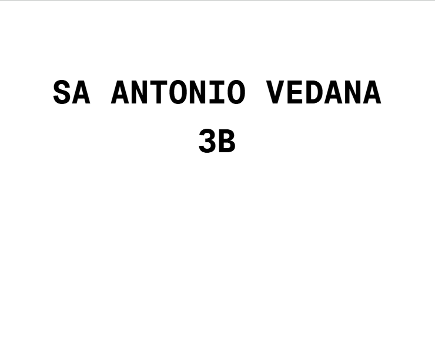

Banco de Dados
Terceiro Ano - Ensino Médio

SA Banco de Dados
Nesse trabalho, tive como objetivo elaborar um projeto de banco de dados para um cenário específico. Escolhi uma biblioteca para basear a minha solução, criando um modelo conceitual, um diagrama de entidade-relacionamento e um banco de dados funcional. Para a entrega, separei em um docs tanto os dois diagramas bem como vários prints de SELECTs realizaods no banco de dados, demonstrando as tabelas e implementação. Foi um trabalho enriquecedor, pois além de me preocupar com a modelagem e elaboração conceitual, também tive que por a 'mão na massa' e criar o banco de dados.

Grand Prix 2026
O Grand Prix de Inovação SENAI 2026 é uma competição em formato hackathon, onde empresas disponibilizam desafios reais para que estudantes desenvolvam soluções inovadores em equipe. Nossa equipe (Soyuz) optou por realizar o desafio da empresa Petrobras de Cybersegurança e Ética Digital, sendo o desafio criar uma solução para o problema de segurança de dados em dispositivos inteligentes (como smart glasses). Nossa equipe desenvolveu uma arquitetura baseada em sessões efêmeras e criptografia ao lidar com IA. Foi um trabalho intenso, por envolver uma solução relativamente grande (um pitch, um vídeo apresentando o protótipo e um lean canvas) em apenas uma semana.